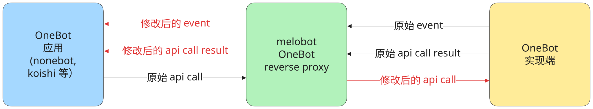

OneBot 反向代理¶
前置知识¶
简介¶
melobot 从 3.4.0 版本开始，OneBot 协议支持反向代理模式。作为真正的 OneBot 实现端与其他 OneBot 应用（例如 nonebot, koishi 等）的中间层。在反代模式中，你可以修改来自实现端或下游应用的数据内容，或拦截特定的数据，以实现各种自定义功能，例如：
复用其他 OneBot 应用的功能，而不是在 melobot 中完全重写。
在复用功能的基础上，编写拦截修改代码以实现自定义功能。这是一种过渡方案。
或直接通过反代完成一些经典的需求（例如下游负载均衡）
具体架构如下图所示：
{kind=link}

配置¶
反代功能需要在源对象上进行配置。通过以下方式，在一个源上启用反代功能：
from melobot.protocols.onebot.v11 import RProxyWSServer, WSServer
bot.add_io(
WSServer(
# 这里我们创建一个 ws 服务端的源，运行在 127.0.0.1:8091 上
# 这是与实现端建立的通信渠道，因此实现端需要作为 ws 客户端与我们建立连接
"127.0.0.1", 8091,
# 在此基础上，我们再建立与下游 OneBot 应用的通信渠道
# 在这一渠道上，我们作为另一个 ws 服务端，运行在 127.0.0.1:8092 上
# 因此下游应用，需要作为 ws 客户端来与此服务端建立连接
rproxy=RProxyWSServer("127.0.0.1", 8092),
)
)
提示
与实现端的通信方式、与下游应用的通信方式，这两者没有固定搭配。你可以自由选择：
与实现端通信，作为客户端使用
WSClient与实现端通信，作为服务端使用
WSServer与下游应用通信，作为客户端使用
RProxyWSClient与下游应用通信，作为服务端使用
RProxyWSServer
需要特别注意：一个源对象只能与一个 OneBot 实现端建立连接。若启用反代功能，也最多只能与一个下游的 OneBot 应用建立连接。
使用¶
当一个源对象启用反代模式后，它依然会优先完成 melobot 内置的工作流程，再运行反代相关处理。
修改传递给下游的 event¶
当收到一个 event 的数据，会先完成 melobot 内部所有事件处理。
在这些事件处理过程中，可以进行“传递修改”，这会决定下游是否能收到此 event 的数据，或收到什么样的数据。示例：
from melobot.plugin import PluginPlanner
from melobot.protocols.onebot.v11 import on_message, MessageEvent
p = PluginPlanner("0.0.1")
@p.use
@on_message(lambda e: e.text == ".hi")
async def _(e: MessageEvent) -> None:
# 你可以先执行其他逻辑，例如 melobot 层级的处理 ".hi" 的行为
...
# 再指定对于此 event 数据的反代行为：
logger.info("收到 .hi 指令，准备修改后再传递给下游")
# 修改传递给下游的 event dict 中的特定字段
e.to_downstream.set_param("message", ".hello")
e.to_downstream.set_param("raw_message", ".hello")
# 当然，你也可以直接覆盖整个 event dict
e.to_downstream.override({...})
# 如果完全不想传递给下游
e.to_downstream.forbidden()
修改传递给下游的 api call result¶
当收到一个 api call result 的数据，会在内部形成 UpstreamRetEvent 事件，随后通过类似的方式处理：
from melobot.plugin import PluginPlanner
from melobot.protocols.onebot.v11 import on_upstream_ret, UpstreamRetEvent
p = PluginPlanner("0.0.1")
@p.use
@on_upstream_ret(lambda e: e.calling_type == "get_version_info")
async def _(e: UpstreamRetEvent) -> None:
logger.info("收到上游返回的版本信息，正在拦截并修改响应")
# 修改传递给下游的 api call result dict 中的字段
e.to_downstream.set_data_param("app_name", "melobot ob11 reverse proxy")
e.to_downstream.set_data_param("app_version", "1.0.0")
# 当然，也可以直接覆盖整个 dict
e.to_downstream.override({...})
# 如果完全不想传递给下游
e.to_downstream.forbidden()
修改传递给实现端（上游）的 api call¶
当收到一个下游 api call 的数据，会在内部形成 DownstreamCallEvent 事件，随后通过类似的方式处理：
from melobot.plugin import PluginPlanner
from melobot.protocols.onebot.v11 import on_downstream_call, DownstreamCallEvent
p = PluginPlanner("0.0.1")
@p.use
@on_downstream_call(lambda e: e.calling_type == "get_version_info")
async def _(e: DownstreamCallEvent) -> None:
logger.info("收到下游获取版本信息的请求，正在拦截并修改请求")
# 修改或添加传递给实现端（上游）的 api call dict 中的字段
e.to_upstream.set_param("k", "v")
# 当然，也可以直接覆盖整个 dict
e.to_upstream.override({...})
# 如果完全不想传递给实现端（上游）
e.to_upstream.forbidden()